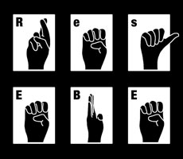

Media Artists
Res EBE
Res EBE è l'alter ego di Colette Baraldi, opera nella luce e nel buio per destabilizzare e comunicare.
WEBSITE
Stefano Polli
Classe 1982, graphic designer e live media artist, specializzato in museografia, motion graphics e comunicazione visiva. Ha realizzato progetti museografici e di interaction design per MTV, Nazioni Unite, Triennale di Milano, Palazzo Reale, Nissan, Rinascente e molti altri.
Cura identità e vjing del collettivo musicale Reset!, realizzando progetti ad alto livello sperimentale, come il primo vj set realizzato in Augmented Reality.
I suoi progetti sono stati pubblicati su testate come Wired, Rolling Stones, Corriere e Repubblica.
Collabora presso gli studi AR.CH.IT architetti associati, Studio Azzurro, Studio Claudio Sinatti, Sugodesign.
WEBSITE
Super Doooper
Il contrasto tra mondo digitale e spazio fisico rappresenta una sfida che lo ha costantemente spinto verso nuovi risultati. Le caratteristiche mutevoli degli spazi in cui lavora non consentono mai una soluzione costante. Le sue opere spaziano da 3D-projection-mapping a interventi con fibre ottiche, sempre creando contrasti tra bianco e nero e linee geometriche che costituiscono la sua forte identità.
WEBSITE
FB PAGE
Veronika Maz

Da sempre grande appassionata di musica, fotografia e psicoanalisi, durante i suoi studi
artistici all’accademia riesce a trovare il connubio perfetto unire queste tre arti in un'unica esperienza: la Visual Music.
Veronika lavora principalmente come freelance Vj/Digital Artist collaborando con diverse realtà artistico-musicali.
WEBSITE
FB PAGE
Fabio Bernardi
XXXXXXXXXXX
XXXXXXXXXXXXXXXXXXXXXXXXXXXXXX
XXXXXXXXXXXXXXXXXXXXXXXXXXXXXX
XXXXXXXXXXXXXXXXXXXXXXXXXXXXXXX
WEBSITE
Marco Rizzo
XXXXXXXXXXX
XXXXXXXXXXXXXXXXXXXXXXXXXXXXXX
XXXXXXXXXXXXXXXXXXXXXXXXXXXXXX
XXXXXXXXXXXXXXXXXXXXXXXXXXXXXXX
WEBSITE
Djs
Dago
Dago nasce come Mindwank attorno all'estate del 2006 a Mantova, poi scappa.
Gabriele invece si lascia alle spalle rave innominabili e feste in cameretta per approdare a Milano e coltivare come un giardiniere le sue passioni. Diventa parte del roaster di Elita Milano producendo eventi, lanciando breakbeat, nudisco, technowaltzer e dissimili da giradischi o sostituti.
Vince 989RecordsContest di Pordenone ancora imberbe, fa prove di canto a caso, si finge un gatto e mette musica a fianco di Moullinex, 2ManyDJs, Onra, Pantha du Prince, Shox e altri felici disperati.
SOUNDCLOUD
Dave
Dj modenese, Little Dave è cresciuto artisticamente sotto l’ala di Johnny Paguro – Museek and Pizzico Records – ed è ora di casa al 65mq di Milano. É entrato a far parte della scena locale collaborando con LoveAndSound, un blog di ...
WEBSITE